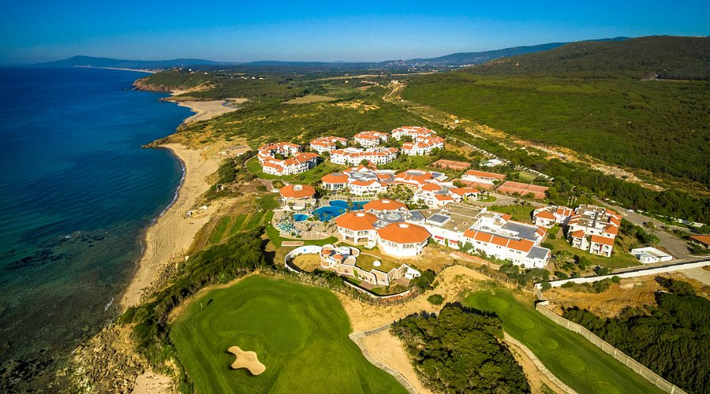
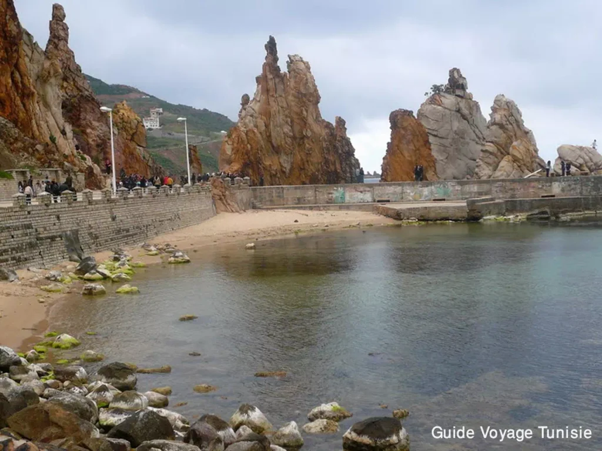
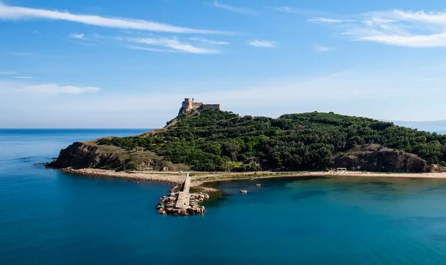
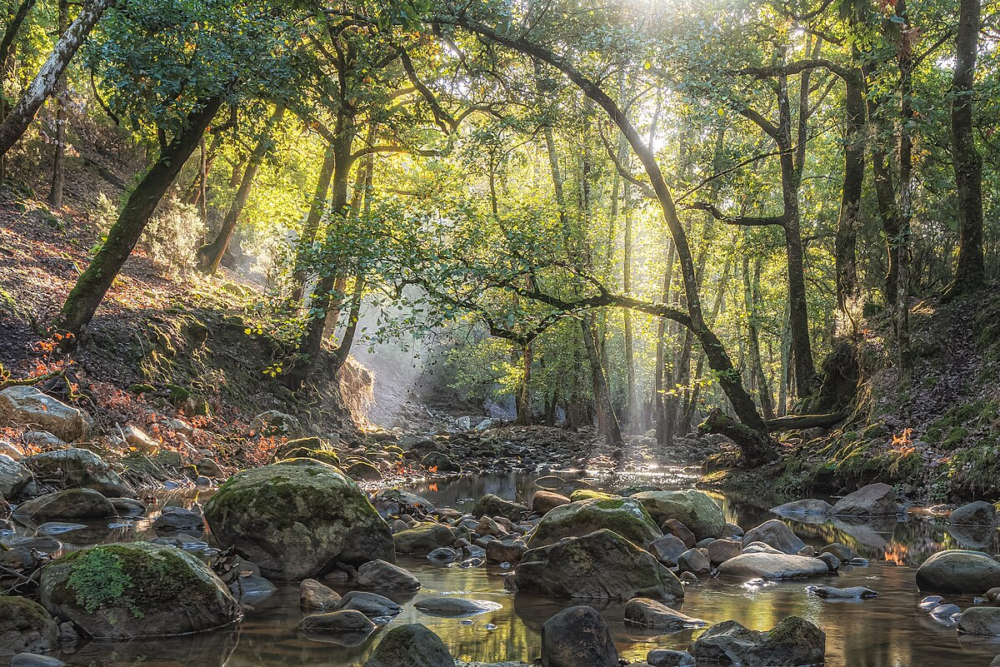

Jendouba
jendouba la verte - porte du nord-ouest
À propos de Jendouba
Le Gouvernorat de Jendouba est une région située dans le nord-ouest de la Tunisie, frontalière avec l'Algérie. C'est une zone caractérisée par sa diversité géographique exceptionnelle, alliant montagnes, forêts denses et un littoral méditerranéen préservé.
Emplacement
Jendouba est située dans l'extrême nord-ouest de la Tunisie, à environ 150 kilomètres de Tunis. Elle est limitrophe de la wilaya algérienne de Souk Ahras. La région est dominée par les montagnes de la Kroumirie, connues pour être la zone la plus arrosée de Tunisie.
Histoire
La région de Jendouba est riche en histoire, marquée par sa proximité avec des civilisations anciennes. Elle abrite l'un des sites archéologiques les plus impressionnants du pays : Bulla Regia. Cette ancienne cité numide, puis romaine, est célèbre pour ses maisons semi-souterraines uniques (villas à étages inversés) conçues pour se protéger de la chaleur, une adaptation architecturale fascinante.
Caractéristiques
- Biodiversité et Forêts : Jendouba possède les plus grandes étendues forestières de Tunisie, notamment des forêts de chênes-lièges. C'est un haut lieu de la biodiversité tunisienne et la région la plus verte du pays.
- Agriculture : L'agriculture y est également très présente, tirant profit d'un climat pluvieux et des terres fertiles de la vallée de la Mejerda..
- Tourisme Nature et Balnéaire : La région attire des visiteurs en quête de nature sauvage (randonnée, chasse) et de plages tranquilles et préservées sur la côte méditerranéenne (notamment à Tabarka et Melloula).
- Tabarka, le Joyau Côtier : Tabarka, une ville côtière située dans le gouvernorat, est un pôle touristique majeur, célèbre pour son port de plaisance, ses festivals de jazz, ses rochers sculptés ("Les Aiguilles") et la plongée sous-marine.
Top Places à Visiter
1. Aïn Draham
surnommée la "ville blanche" en raison de ses maisons aux toits de tuiles rouges, est un havre de paix pour les amoureux de la nature


2.Tabarka
une ville côtière, est célèbre pour son Fort Génois, ses formations rocheuses "Les Aiguilles" et ses récifs coralliens, idéaux pour la plongée sous-marine. .



3.Parc national de Oued Zen
Situé dans la délégation d'Aïn Draham, ce parc offre un cadre magnifique pour la randonnée et l'observation de la faune, y compris le cerf de Barbarie. Le paysage montagneux de la chaîne de Khroumirie est très apprécié pour sa tranquillité et sa beauté, quelle que soit la saison.

4. Site archéologique de Bulla Regia
Ce site est unique au monde grâce à ses villas romaines à étages souterrains, une adaptation ingénieuse pour se protéger de la chaleur estivale. Vous y verrez des sols en mosaïque impressionnants et bien conservés, ainsi que des thermes privés.

- Mon Plaisir Jendouba : C'est un établissement polyvalent qui fait office de restaurant à la carte, pizzeria et café. Il est connu pour son service rapide et son personnel accueillant.
- Pizza Woods Lounge Jendouba : Cet endroit est un restaurant et café qui propose une variété de plats, notamment des pizzas, des assiettes, des jus frais, et est apprécié pour ses brunchs et petits déjeuners.
- CHMOULA : Très apprécié pour son excellent rapport qualité-prix et sa rapidité de service, c'est un choix populaire pour des repas rapides et savoureux.
- La cabane : Un café et restaurant local qui propose un cadre agréable pour se détendre.
- La Perla Cafe : : Un café au caractère unique, apprécié pour son ambiance calme et chaleureuse.